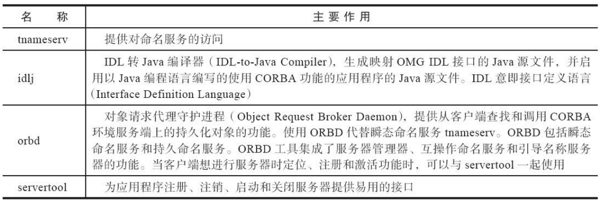

1. 概述
- 给一个系统定位问题的时候，知识、经验是关键基础，数据是依据，工具是运用知识处理数据的手段 。
- 恰当地使用虚拟机故障处理、 分析的工具可以提升我们分析数据、定位并解决问题的效率。
我们在学习工具前，应当意识到工具永远都是知识技能的一层包装，没有什么工具是“秘密武器”，拥有了就能“包治百病”。
2. 基础故障处理工具
随着JDK版本的更迭，Java的bin目录下的小工具的数量和功能在逐渐增加和增强。其场景范围包括 编译、运行、打包、部署、签名、监控、运维等：
这些工具根据软件可用性和授权的不同，可分为如下三类：
- 商业授权工具：主要是JMC（Java Mission Control）及它要使用到的JFR（Java Flight Recorder），JMC这个原本来自于JRockit的运维监控套件从JDK 7 Update 40开始就被集成到OracleJDK 中，JDK 11之前都无须独立下载，但是在商业环境中使用它则是要付费的。
- 正式支持工具：属于被长期支持的工具。
- 实验性工具：这一类工具在它们的使用说明中被声明为“没有技术支持，并且是实验性质的”产品，日后可能会转正，也可能会在某个JDK版本中无声无息地消失。但事实上它们通常都非常稳定而且功能强大，也能在处理应用程序性能问题、定位故障时发挥很大的作用。
2.1. jps：虚拟机进程状况工具
jps可以列出正在运行的虚拟机进程，并显示虚拟机执行主类名称以及这些进程的本地虚拟机唯一ID（LVMID，Local Virtual Machine Identifier）。
对于本地虚拟机进程来说，LVMID与操作系统的进程ID（PID，Process Identifier）是一致的，使用Windows的任务管理器或者UNIX的ps命令也可以查询到虚拟机进程的LVMID，但如果同时启动了多个虚拟机进程，无法根据进程名称定位时，那就必须依赖jps命令显示主类的功能才能区分了。
jps命令格式：
jps [ options ] [ hostid ]
2.2. jstat：虚拟机统计信息监视工具
jstat（JVM Statistics Monitoring Tool）：是用于监视虚拟机各种运行状态信息的命令行工具。它可以显示本地或者远程虚拟机进程中的类加载、内存、垃圾收集、即时编译等运行时数据。
jstat命令格式：
jstat [ option vmid [interval[s|ms] [count]] ]
vimd/lvimd：指定本地/远程虚拟机进程interval：查询间隔count：次数option：用户希望查询的虚拟机信息，分为 类加载、垃圾收集、运行期编译状况 三类
jstat -gcutil 2764
S0 S1 E O P YGC YGCT FGC FGCT GCT
0.00 0.00 6.20 41.42 47.20 16 0.105 3 0.472 0.577
查询结果表明：
- 这台服务器的新生代Eden区（E，表示Eden）使用了6.2%的空间，
- 2个Survivor区 （S0、S1，表示Survivor0、Survivor1）里面都是空的，
- 老年代（O，表示Old）和永久代（P，表示 Permanent）则分别使用了41.42%和47.20%的空间。
- 程序运行以来共发生Minor GC（YGC，表示Young GC）16次，总耗时0.105秒；
- 发生Full GC（FGC，表示Full GC）3次，总耗时（FGCT，表示Full GC Time）为0.472秒；
- 所有GC总耗时（GCT，表示GC Time）为0.577秒。
2.3. jinfo：Java配置信息工具
jinfo（Configuration Info for Java）：用于实时查看和调整虚拟机各项参数。
jinfo [ option ] pid
2.4. jmap：Java内存映像工具
jmap（Memory Map for Java）：用于生成堆转储快照（一般称为heapdump或dump文件）。还可以查询finalize执行队列、Java堆和方法区的详细信息，如空间使用率、当前用的是哪种收集器等。
jmap [ option ] vmid
2.5. jhat：虚拟机堆转储快照分析工具
jhat（JVM Heap Analysis Tool）：一般与jmap搭配使用，来分析jmap生成的堆转储快照。 jhat内置了一个微型的HTTP/Web服务器，生成堆转储快照的分析结果后，可以在浏览器中查看。
- 一般不会在部署应用程序的服务器上直接分析堆转储快照，即使可以这样做，也会尽量将堆转储快照文件复制到其他机器上进行分析，因为分析工作是一个耗时而且极为耗费硬件资源的过程，既然都要在其他机器上进行，就没有必要再受命令行工具的限制了。
- jhat的分析功能相对来说比较简陋，后文将会介绍到的VisualVM，以及专业用于分析堆转储快照文件的Eclipse Memory Analyzer、IBM HeapAnalyzer等工具，都能实现比jhat更强大专业的分析功能。
2.6. jstack：Java堆栈跟踪工具
jstack（Stack Trace for Java）：用于生成虚拟机当前时刻的线程快照（一般称为threaddump或者 javacore文件）。
线程快照就是当前虚拟机内每一条线程正在执行的方法堆栈的集合，生成线程快照的目的通常是定位线程出现长时间停顿的原因，如线程间死锁、死循环、请求外部资源导致的长时间挂起等，都是导致线程长时间停顿的常见原因。
jstack [ option ] vmid
2.7. 基础工具总结
下面表4-5～表4-14中罗列了JDK附带的全部（包括曾经存在但已经在最新版本中被移除的）工具及其简要用途：

3. 可视化故障处理工具
JDK中除了附带大量的命令行工具外，还提供了几个功能集成度更高的可视化工具，用户可以使用这些可视化工具以更加便捷的方式进行进程故障诊断和调试工作。这类工具主要包括JConsole、 JHSDB、VisualVM和JMC四个。